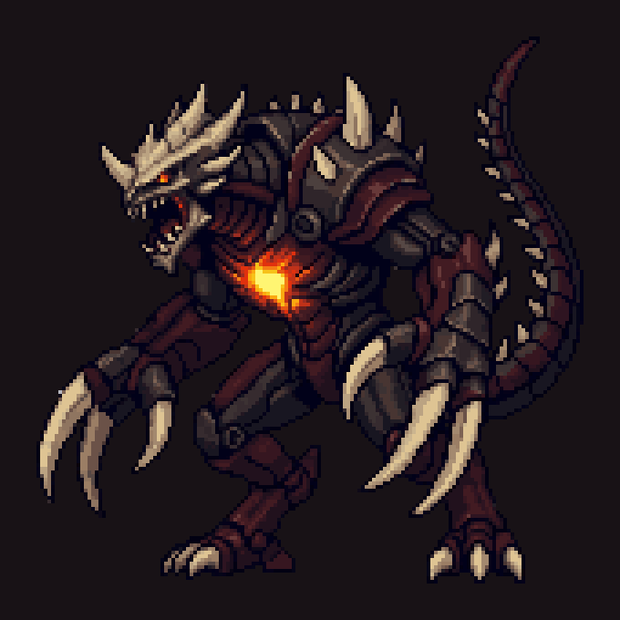
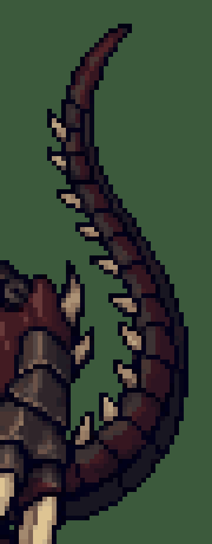
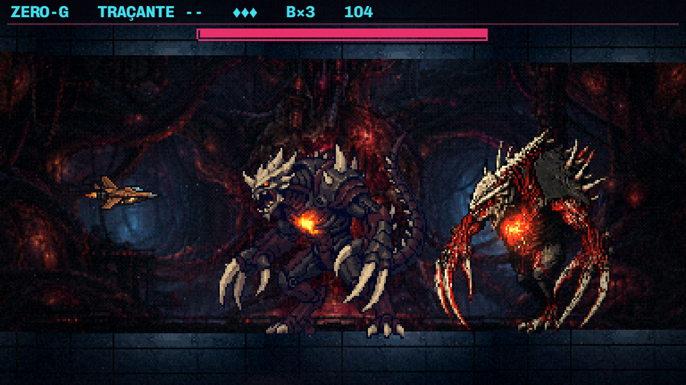
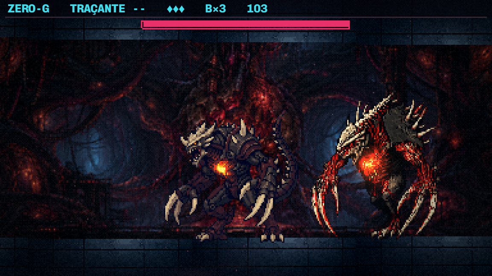
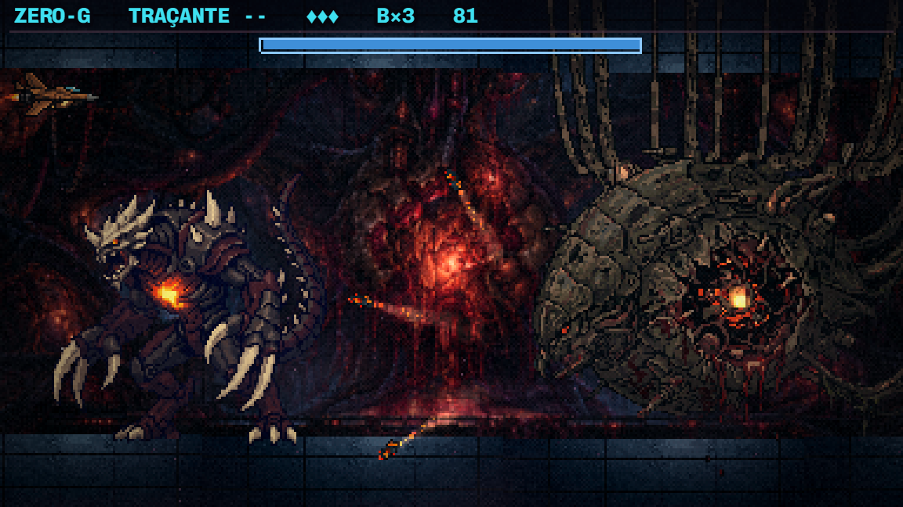
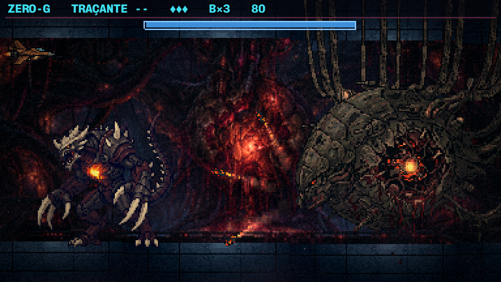

24/11. A E-7-1 conferida ampliada e posta dentro do jogo rodando (na 5173, com a Atmosfera da F4 por cima), ao lado da Besta atual e do Guardião. Ela entra como uma textura a mais na hora: nada foi mexido em src/.


A nova está à esquerda, no mesmo chão (os pés em y 190), e a atual à direita, parada na pose dela.




Ela conversa com o Guardião. A placa grafite e o core aceso são o mesmo vocabulário da casca dele, e ela parece a energia que estava lá dentro, que é o tema (c). A Besta atual, toda vermelha, era outra família.
| média | mediana | os 5% mais claros | o 1% mais claro | |
|---|---|---|---|---|
| o Guardião (a coleira) | 0,159 | 0,144 | 0,400 | 0,554 |
| a Besta nova (E-7-1) | 0,181 | 0,115 | 0,653 | 0,777 |
| a Besta atual (a luta) | 0,192 | 0,093 | 0,793 | 0,923 |
A nova fica entre os dois. O corpo é escuro como o do Guardião. O que a deixa clara é o osso (o capacete, os chifres, as garras e os espinhos), que é o pedaço mais claro dela, embora já bem mais escuro que o osso da atual. A spec do rework já previa escurecer o osso da Besta. Aqui, isso seria opcional.
Aprovado em 24/11: tamanho de 105 px e o osso como está.
Ferramenta: ferramentas/no-jogo.mjs <png> <pasta> [altura] põe qualquer arte na luta da Besta e na do Guardião e fotografa as duas.